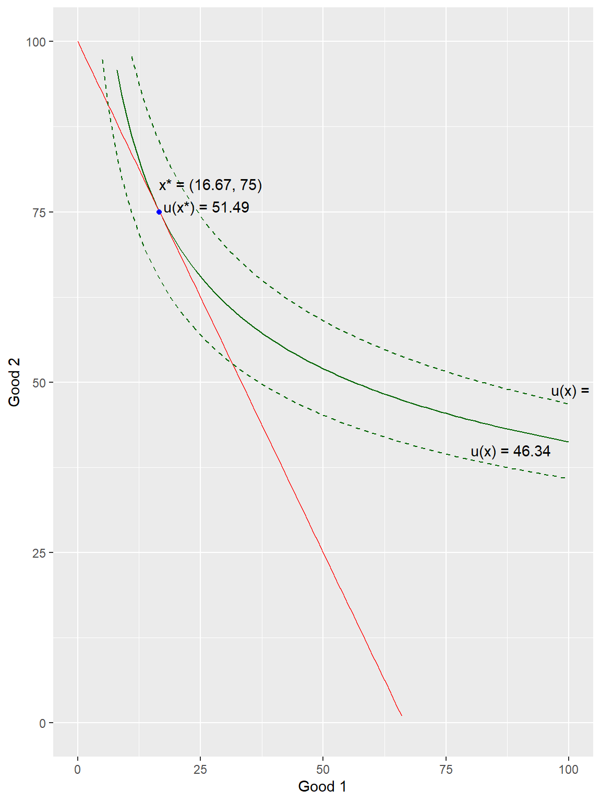

Rational Choice
Overview
A rational consumer chooses the most preferred bundle that lies within their budget constraint.
When we represent preferences with a utility function, that bundle maximizes utility subject to the budget constraint.
Solution methods:
- Graphical
- Analytical
- Computational
Example
The following example solves the utility maximization problem involving a two-good Cobb-Douglass utility function with \(\alpha = 0.25\), \(p_1 = 1.5\), \(p_2 = 1\), and \(m = 100\).
\[\max_x \bigg\{ U(x_1, x_2) = x_1^{0.25}x_2^{0.75} \bigg\}\] \[\text{s.t.: }1.5x_1+x_2 \le 100\]
Graphical Solution
The graphical solution shows the intuition for the equilibrium, which is:
- The consumer’s willingness to trade off \(x_1\) and \(x_2\) (the MRS, or slope of the indifference curve) equals the market’s willingness to trade off \(x_1\) and \(x_2\) (the relative price of good 1 to good 2, or the slope of the budget line); \[\frac{MU_1}{MU_2}=\frac{p_1}{p_2}\]
- The consumer exactly spends their budgeted income. \[p_1x_1 + p_2x_2 = m\]
Click here to view the code for the graph.
a = 0.25; p1 = 1.5; p2 = 1; m = 100ux <- function(x) -x[1] ^ (a) * x[2] ^ (1 - a)bc <- function(x) p1 * x[1] + p2 * x[2]eq <- solnp(c(1, 1), ux, ineqfun = bc, ineqLB = 0, ineqUB = m,LB = c(0, 0), UB = c(Inf, Inf), control = list(trace = 0))curve((-ux(eq$pars))^(1/(1-a)) / (x^(a/(1-a))),from = 0, to = m / p1, ylim = c(0, m / p2),xlab = expression(x[1]), ylab = expression(x[2]), col = 'darkgreen')abline(m / p2, -p1 / p2, col = 'red')points(eq$pars[1], eq$pars[2], col = 'blue', pch = 20)curve((1.1 * -ux(eq$pars))^(1/(1-a)) / (x^(a/(1-a))),add = TRUE, col = 'darkgreen', lty = 'dashed')curve((0.9 * -ux(eq$pars))^(1/(1-a)) / (x^(a/(1-a))),add = TRUE, col = 'darkgreen', lty = 'dashed')text(eq$pars[1] + 4, eq$pars[2] + 4,paste0('x = (', round(eq$pars[1], 2), ', ', round(eq$pars[2], 2), ')\nu(x) = ', round(-ux(eq$pars), 2)))text(50, (1.1 * -ux(eq$pars))^(1/(1-a)) / (50^(a/(1-a))) + 3,paste0('u(x) = ', round(1.1 * -ux(eq$pars), 2)))text(50, (0.9 * -ux(eq$pars))^(1/(1-a)) / (50^(a/(1-a))) + 3,paste0('u(x) = ', round(0.9 * -ux(eq$pars), 2))) 
Analytical Approach
Five Key Steps
- Rearrange the constraint to be something equal to zero when it binds.
- Define the Lagrangean: add \(\lambda \cdot [constraint]\) to the objective function (remember, it’s zero when it binds, so you’re not really adding anything!).
- Take derivatives with respect to the choice variables (\(x_1\) and \(x_2\)) and \(\lambda\).
- Set the derivatives equal to zero.
- Solve the system of equations for \(x_1\), \(x_2\) and \(\lambda\).
The “Lagrangian” function for our example is:
\[\mathcal{L} = x_1^{0.25}x_2^{0.75} + \lambda (100 - 1.5x_1 - x_2)\]
Click here to view the steps for solving the problem analytically.
For the constrained optimization problem given above, use the
deriv function to:
- Define a yac_symbol object for the utility function and the Lagrangian;
- Find the gradient with respect to \(x_1\), \(x_2\), and \(\lambda\);
First-Order Conditions
Setting the derivatives of the Lagrangean equal to zero finds the “first-order conditions.” These conditions find the “critical values” where the Lagrangean switches from increasing to decreasing (or vice-versa) corresponding to maximum (minimum) values.
Run the following code to derive the first order conditions (first derivative - changes with respect to each variable - equal to zero) for the Lagrangean function.
library(Ryacas)
Attaching package: 'Ryacas'The following object is masked from 'package:stats':
integrateThe following objects are masked from 'package:base':
%*%, det, diag, diag<-, lower.tri, upper.triu <- ysym('x1^(0.25) * x2^(0.75)') # Define u(x) as a yac_symbol
L <- u + ysym('lambda*(100 - 1.5*x1 - x2)') # Define L(x) as a yac_symbol
dL <- deriv(L, c('x1', 'x2', 'lambda')) # Take the derivatives - "gradient"
dL{0.25*x1^(-0.75)*x2^0.75-1.5*lambda, 0.75*x1^0.25*x2^(-0.25)-lambda, 100-1.5*x1-x2} library(Ryacas)
u <- ysym('x1^(0.25) * x2^(0.75)')
L <- u + ysym('lambda*(100 - 1.5*x1 - x2)')
dL <- deriv(L, c('x1', 'x2', 'lambda'))
dL\[0.25 x_{1} ^{-0.75} x_{2} ^{0.75} - 1.5 \lambda = 0 \text{ (w.r.t. good 1)}\] \[0.75 x_{1} ^{0.25} x_{2} ^{-0.25} - \lambda = 0 \text{ (w.r.t. good 2)}\] \[100 - 1.5 x_{1} - x_{2} = 0 \text{ (w.r.t. }\lambda)\]
Solving for the Equilibrium
The basic recipe:
- Solve the first-order conditions with respect to \(x_1\) and \(x_2\) for \(\lambda\).
- Combine these two conditions to form the MU-per dollar or MRS condition. \[\frac{MU_1}{p_1} = \frac{MU_2}{p_2} = \lambda \text{, or}\] Rearranging, this is equivalent to: \[\frac{MU_1}{MU_2} = \frac{p_1}{p_2}.\]
- Solve the MU/dollar or MRS condition and the budget constraint for \(x_2\).
- Combine these two equal expressions and solve for \(x_1^*\).
- Repeat 3 and 4 or substitute \(x_1^*\) to solve for \(x_2^*\)
- Substitute \(x_1^*\) and \(x_2^*\) in the first-order conditions to find \(\lambda\).
The MRS Condition
Click here to view the steps for solving the problem analytically.
Derive the \(MRS\) of the example with the following steps:
- Solve the first-order conditions with respect the \(x_1\) for \(\lambda\) using
solvefromRyacas. Pipe this forward toy_rmvars()to remove thelambda ==and multiply the result byp1. Name this objectMU1. - Convert the result to a string with
yac_strand cancel terms withSimplify(). Convert the result back to ayac_symbolwithysym. - Repeat 1 and 2 for the first-order condition with respect to \(x_2\) and name it
MU2. - Divide
MU1/MU2to get the MRS.
MU <- deriv(u, c('x1', 'x2')) # Derive the marginal utilities (could get from L)
MRS <- yac_str(MU[1]/MU[2]) |> # Calculate, simplify, and format the MRS = MU1/MU2
Deriv::Simplify() |>
ysym()MU <- deriv(u, c('x1', 'x2'))
MRS <- yac_str(MU[1]/MU[2]) |>
Deriv::Simplify() |>
ysym()\[MRS = \frac{x_{2}}{3 x_{1}} = \frac{p_1}{p_2}\] ### Solving for Consumption
Click here to view the steps for solving the problem analytically.
Solve() can take up to three arguments:
- The right-hand side expression, formatted as a
yac_symbol(required). - The left-hand side expression, which may be either an equation or numerical value (default is zero).
- The variable to solve for.
In addition, each of these arguments may be vectors, so you may solve multiple equations for multiple variables.
The solution for \(x_1\) will still contain the variable \(x_2\) even though we have found the numerical solution for \(x_2\). We can clean this up usingwith_value().
Solve for the optimal \(x_1^*\) and \(x_2^*\).
xStar <-
solve(c(MRS, dL[[3]]), # Simultaneously solve the MRS condition and Budget
c(p1 / p2, 0), # Set the MRS equal to p1/p2 and Budget to zero
c('x1', 'x2')) |> # Solve for x1 and x2
y_rmvars() # Remove the variables (x1 = ...) from the expression
xStar <-
with_value(xStar, # Make a value replacement in the solution
'x2', xStar[2]) |> # Replace 'x2' with its solution (element 2 of xStar)
as_r() # Reformat as a numerical R objectxStar <-
solve(c(MRS, dL[[3]]),
c(p1/p2, 0), c('x1', 'x2')) |>
y_rmvars()
xStar <-
with_value(xStar,
'x2',
xStar[2]) |>
as_r()Solving for \(\lambda\)
- Substitute the value in the first position
lambda <- solve(dL[1], 'lambda') |> # Solve the FOC with respect to x1 for lambda
y_rmvars() |> # Remove the left-hand side (lambda = ...)
with_value('x1', xStar[1]) |> # Substitute the solution for x1 for x1
with_value('x2', xStar[2]) |> # Substitute the solution for x2 for x2
as_r() # Reformat as a numerical R objectlambda <- solve(dL[1], 'lambda') |>
y_rmvars() |>
with_value('x1', xStar[1]) |>
with_value('x2', xStar[2]) |>
as_r()If you print the solution for all three choice variables, it will look like this:
\((16.6666667, 75, 0.5149418)\)
Computational Solution
Not gonna lie: part of the point of going through the solution analytically was to show you what a pain in the tuchus it can be! (It’s not necessarily better doing it on pencil-and-paper “by hand” either!)
Now, we’ll set that aside and let the computer crunch the numbers. One downside of this is that we’ll lose some of the intuition of the expressions we derived in the analytic solution.
Setup
Set up the solution by defining the following
- A utility function,
uxdefined as afunction(x)object wherex = c(x[1], x[2]).
Note: most optimization functions find the function minimum by default. Some have an option that switches from minimization to maximization;solnpdoes not, so we will minimize the negation of the utility function (i.e. put a “-” sign in front). - The budget constraint,
bcdefined similarly toux. - The parameters
a,p1,p2, andmusing the numerical values from the example.
Solving Constrained Optimization in R:
Rsolnp::solnp()
Once we’ve defined these values, the solution for the optimal
consumption bundle involves a single function, solnp(),
from the Rsolnp package (which imports automatically with
our MicroWithR, but still needs to be loaded using
library())
The required arguments for this function are (in order):
pars: the starting values (an initial “guess”) for \(x\) (which must be positive - and usually small - for economically-sensible answers);fun: the function to be minimized (the disutility function,ux);
For constrained optimization (as we currently face) we also need:
ineqfun: the inequality constraint functionineqLB: the lower bound ofineqfun(for the budget constraint, \(-\infty\) coded as-Inf)ineqUB: the upper bound ofineqfun(for the budget constraint, income -m).
Finally, we often forget to constrain the solution to positive quantities (effectively no short-selling of consumption!).
LB: the lower bound on the parameters (x1andx2), which in most economic problems we set as a vector of zeros - c(0, 0) for two-good consumer choice; c(0, 0, 0) for three goods, etc.UB: the upper bound on the parameters, which in most problems we leave unspecified and defaults to no upper bound orUB = c(Inf, Inf).
control: a list of technical control parameters, as well as whether to show the “trace” output of objective function and parameter values at each iteration (control = list(trace = 0)to hide).
The output of the solnp function is a list
object. You can view all of the components of a list by just typing the
name of the object. You can view (or extract for other calculations)
individual components of a list by specifying the list name and the name
of the component within the list separated by $. For
example, eq$pars gives you the solutions of the x values in
a solnp solution named eq.
Equilibrium Consumption
Setting up the problem is the key: once you do this (carefully!)
there is only one line of code to get the solution. Do this, then print
the elements of the solution corresponding to the pars (x
values) lagrange (Lagrange multiplier), and the final value
of the objective function.
Hint: you defined the utility function as
ux = function(x) {...}. Evaluate ux at the
solution pars. Recall that the true value of
utility is the negative of the disutility function we
used in the optimization.
Note: The true value of the Lagrange multiplier for the utility-maximization problem is also the negative of the Lagrange of the disutility-minimization problem.
eq <- solnp(c(1, 1), ux, ineqfun = bc, ineqLB = 0, ineqUB = m,
LB = c(0, 0), UB = c(Inf, Inf))
eq$pars
-eq$lagrange
-ux(eq$pars)##
## Iter: 1 fn: -51.4942 Pars: 16.66667 75.00000
## Iter: 2 fn: -51.4942 Pars: 16.66667 75.00000
## solnp--> Completed in 2 iterationsNote that the intuition from the analytical solution tells us that the “true” answer is \(x_1 = 50/3 \approx 16.667\) and \(x_2 = 75\) to ensure that this consumer spends 25% of their planned budget for the two goods on good 1, or one-third as much as they spend on good 2. Computational methods only give approximate answers, so it’s good to double check!
Graph of the Equilibrium
We can also graph the equilibrium.
The trick to graphing the equilibrium is graphing the right indifference curve. We want to make sure we graph the indifference curve where \(u(x) = u^*\), where \(u^*\) is the value of the utility at the optimal consumption bundle.
Since \(u^*\) is just a number (once
we solve for the optimal x), just rearrange \(u(x_1, x_2) = u^*\) to get \(x_2 = f(x_1; u^*)\). Doing this by hand is
not too bad for most examples if you remember some algebra for exponents
and other elementary functions, but you can also use
Ryacas.
- Graph the indifference curve (\(x_2 =
f(x_1^*; u^*)\), in
'dark green') using x-limits (xlim) equal to \((0, m/p_1)\) and y-limits (ylim) equal to \((0, m/p_2)\) and axis labels (xlabandylab) of \(x_1\) and \(x_2\). - Add the budget constraint using
ablinein'red'. - Add a point for equilibrium using
pointsin'blue'.
curve((-ux(eq$pars))^(1/(1-a))/(x^(a/(1-a))), # x2 = f(x1, u)
from = 0, to = m/p1, ylim = c(0, m/p2), # x domain; y-axis limits
xlab = expression(x[1]), ylab = expression(x[2]), # Fancy axis labels
col = 'darkgreen')
curve(m/p2 - x*(p1/p2), add = TRUE, col = 'red') # Add a red budget line
points(eq$pars[1], eq$pars[2], # Add a point at x*
col = 'blue', pch = 20)